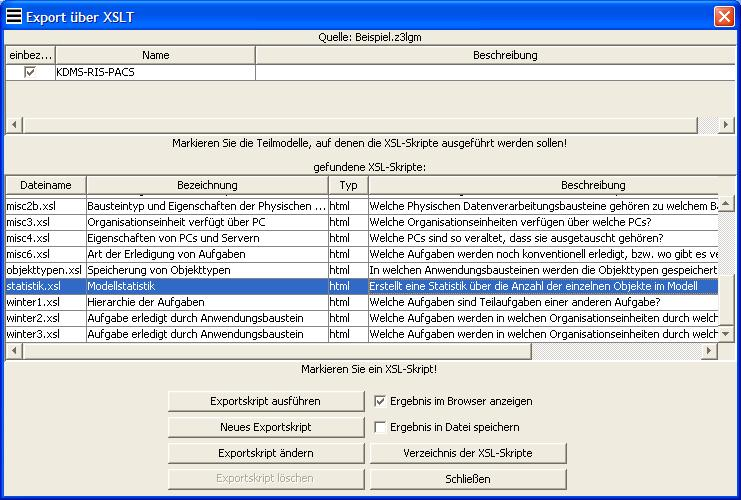

Nutzung von Analysen aus dem Analyseverzeichnis
Das Analysenverzeichnis findet man im Menü Analyse > Verzeichnis. Mit Mausklick kann man die gewünschte Analyse aus der Tabelle auswählen und diese über den Button Analyse starten ausführen. Die Resultate der Analyse sind im Modell durch dicke Umrandungen und Pfeile sowie im Modellbrowser durch Markierungen hervorgehoben. Für ausführlichere Hinweise zum Analyseverzeichnis lohnt sich ein Blick in die Hilfe des 3LGM²-Baukastens.

Nutzung von Analyse-Optionen
Im Menü Optionen > Analyse-Optionen
besteht die Möglichkeit,
die Konfigurationsredundanz von
Aufgaben bzw. die Datenredundanz
von Objekttypen ausrechnen zu lassen. Es erscheint ein
Häkchen vor der jeweiligen Option, wenn diese aktiviert ist. Im
Modell werden dann auf der fachlichen Ebene neben jeder einzelnen
Aufgabe bzw. jedem Objekttyp Werte eingeblendet, die ein Maß
für die Konfigurationsredundanz bzw. Datenredundanz1
angeben. Aus
diesen einzelnen Werten werden der Redundanzfaktor und der
Untersättigungsfaktor berechnet, welche über dem oberen Rand
des Modellfensters der fachlichen Ebene erscheinen. Um die Zahlen wieder auszublenden, wählt
man wiederum die genannten Analyse-Optionen im Optionen-Menü aus.
Nutzung des Analyse-Dialoges
Im Analyse-Dialog (Menü Analyse) kann man eigene kleine Analysen generieren, die Pfadinformationen zwischen Elementen im Modell finden und hervorheben. Zu diesem Zweck muss auf der rechten und auf der linken Seite im Dialog je ein Pfadelement-Typ ausgewählt werden. Weiterhin kann festgelegt werden, ob Verbindungen zwischen Elementen oder Elemente ohne Verbindungen gefunden werden sollen. Über den Button Analyse starten wird die Analyse ausgeführt, über einen weiteren Button ist es möglich, die eigene Analyse ins Analyseverzeichnis aufzunehmen. Für ausführlichere Informationen sei auf die Hilfe des 3LGM²-Baukastens verwiesen.

Export über XSLT
Der Export über XSLT ermöglicht es,
bestimmte Informationen aus einem Modell zu extrahieren, die dann
übersichtlich auf einer HTML-Seite zusammengefasst werden.
Über Datei > Export... > Export über XSLT
gelangt man in einen Dialog, in dem man aus einer Liste von
XSLT-Skripten das
gewünschte auswählen und dieses über den Button Exportskript
ausführen starten kann. Anschließend öffnet sich
automatisch der Standard-Browser
und die Ergebnisse der Ausführung des Skripts werden angezeigt.
Zusätzliche Informationen sind in der Baukasten-Hilfe
verfügbar.
